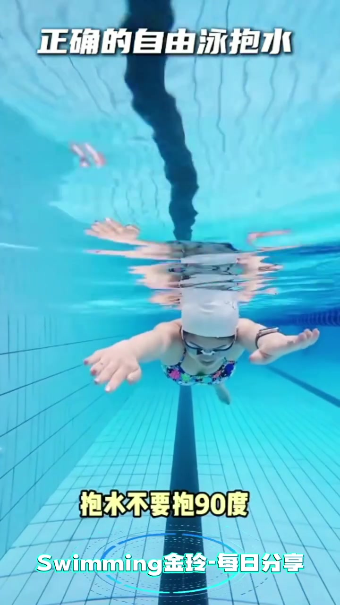
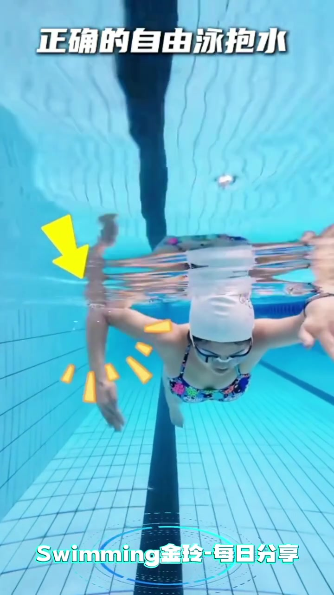
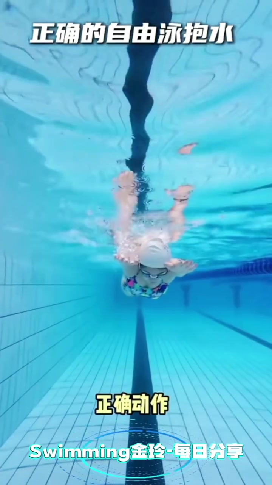
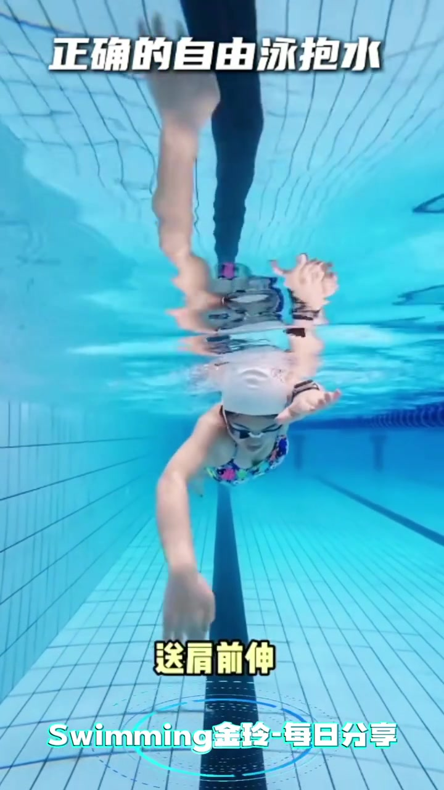
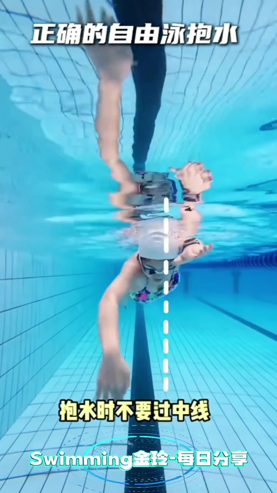
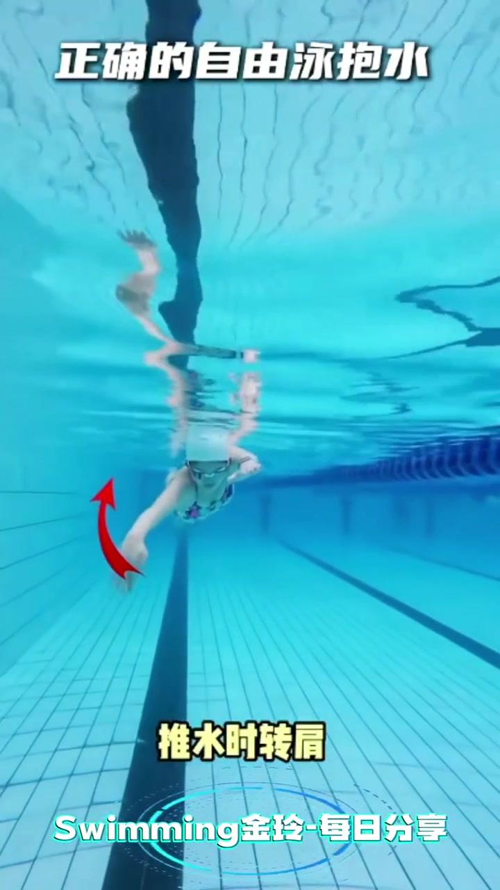
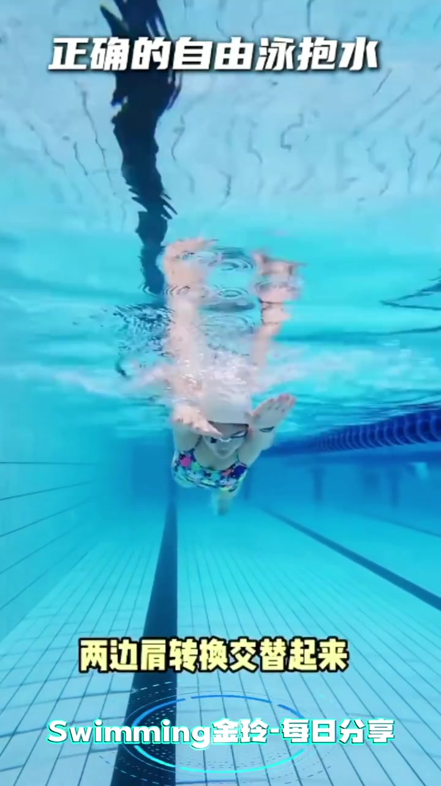
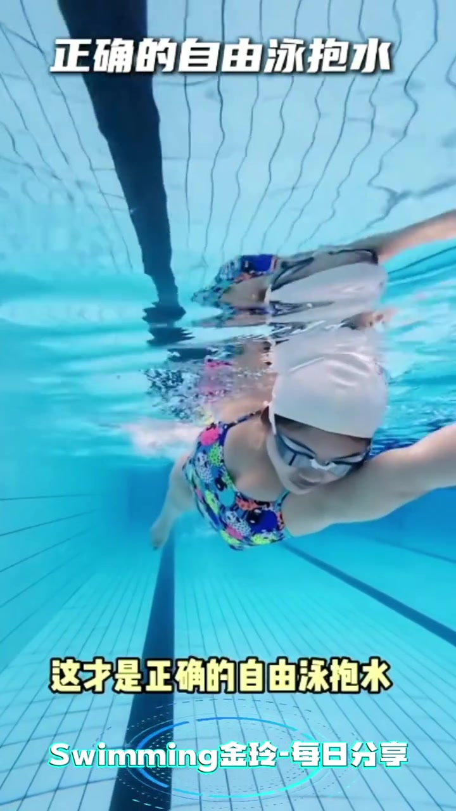

开场 · 00:00
水下前视，把「正确的自由泳抱水」钉在画面顶上
镜头沉在泳池泳道里，作者戴白帽泳镜、花色泳衣，正对镜头做自由泳前伸与抱水。顶部白字全程锁定主题「正确的自由泳抱水」，底部水印是「Swimming金玲-每日分享」。16 秒几乎全是水下动作演示，信息靠叠字、箭头、中线虚线推进。
Whisper 将「抱」误识为「暴」、「前伸」误识为「前身」、「自由泳」误识为「自由擁」，并输出繁体字。页末转录按原始分段保留；正文依据画面叠字与可辨口播意图展开，不虚构未出现的内容。

警示 · 00:00–00:04
先否掉：抱水不要抱成 90 度
开场口播与画面叠字一致：抱水不要抱到 90 度，否则肩关节容易疼。约两秒处，镜头继续前视，右肘高位、前臂下插，黄箭头和星形标记点在肘与前臂上，强调「高肘」不是把肘硬折成直角硬扛。

正确动作 · 00:04–00:08
正解：送肩前伸，往斜下方抱
四秒处出现黄字「正确动作」。作者一侧臂前伸、一侧进入抱水，叠字给出口诀：送肩前伸，往斜下方抱——不是垂直下压到 90 度，而是肩送出去、前臂斜向切入水面下。


边界 · 00:08
抱水时不要过中线
约八秒，画面拉出一条竖直白色虚线，标出身体中线；前伸手停在虚线一侧。黄字写明「抱水时不要过中线」——手掌划过身体中轴，会拧肩、掉线。

联动 · 00:10
推水时转肩，继续送肩前伸
接下来红色弧线箭头标出从抱水到手掌向体侧推水的路径，叠字「推水时转肩」。口播再次强调送肩前伸——推水不是只动手臂，要靠肩转换把身体滚过去，另一侧才能干净前伸。

收束 · 00:13–00:16
两边肩转换交替起来，这才是正确抱水
十三秒左右黄字「两边肩转换交替起来」：左右肩像跷跷板一样轮换，一侧推水转肩，另一侧送肩前伸。收尾叠字「这才是正确的自由泳抱水」，作者保持高肘抱水形态游向镜头，把整条链路封口。


16 秒里发生了什么
从「别硬抱 90 度伤肩」起步，依次叠上送肩前伸、斜下方抱、不过中线、推水转肩与双边交替——水下前视把高肘抱水拆成一条可跟练的动作链，而不是只喊一个「高肘」口号。